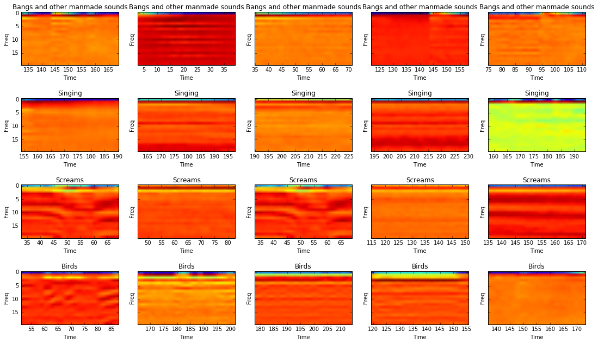

View the Project on GitHub BenSandeen/surveillance_sound_classifier
The goal of our project is to develop a system that can recognize and distinguish between threatening/threat-indicating and non-threatening/non-threat-indicating sounds. This can be useful for surveillance systems, in order to help them effectively monitor their surroundings and report sounds that are often indicative of malfeasance. This is important because it can help prevent a single security officer from falling into a stupor while staring at handfuls of monitors and potentially listening to sound feeds as well. One can imagine that such a job, day after day, will almost invariably become dreadfully bore to a worker, leading to reduced performance. This is where our system should be able to contribute the most.
We envision our system to act as a filter of sorts. It constantly monitors incoming audio feeds and analyzes the sounds it detects. Should the system detect a sound, say, a scream, that often indicates someone is in danger, the system will then alert a human security worker for further analysis and, should the detection indeed prove to be a real issue, determine the best course of action.
This system uses machine learning to classify different sounds based on their features, such as spectral composition, attack (as in how quickly a single sound reaches its peak volume), and the MFCCs (Mel frequency Cepstral Coefficients).
Here are several chromagrams generated from each of our different sound source types (bangs and other manmade/artificial sounds, screams, singing, and birds/other natural sounds). Each row consists of five randomly-selected sound files from the same category.
Here are several MFCCs (Mel Frequency Cepstral Coefficients), generated analogously to the chromagrams. Note that the plots in the corresponding positions between the chromagrams and MFCCs are most likely NOT plots of the same sound file.
